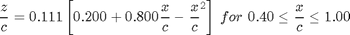
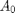

Contents
% Joel Lubinitsky % AEE 342 - HW6: Incompressible Flow over Airfoils (2) % 02/25/15 clear all close all clc
Governing Equations
NACA2412 mean camber line given by:

And chord distribution chosen to be:
Vorticity distribution given by:
With coefficients:

Definitions/Conversions
alpha = 4.5; % Degrees m = 2; % Percent Chord p = 4; % Tenth Chord tt = 12; % Percent Chord alpha = alpha * (pi / 180); % Radians m = m * 0.01; % Fraction Chord p = p * 0.1; % Fraction Chord tt = tt * 0.01; % Fraction Chord
Calculations
theta = linspace(0, pi, 100); xCamber = 0.5 * (1 - cos(theta)); indexP = find(xCamber < p, 1, 'last'); dzdx1 = (1/5) - (1/4) .* (1 - cos(theta(1 : indexP))); dzdx2 = 0.0888 - 0.111 .* (1 - cos(theta(indexP + 1 : end))); dzdx = [dzdx1, dzdx2]; dzdxcos1 = dzdx .* cos( theta); dzdxcos2 = dzdx .* cos(2 * theta); A0 = alpha - (1/pi) * trapz(theta, dzdx); A1 = (2/pi) * trapz(theta, dzdxcos1); A2 = (2/pi) * trapz(theta, dzdxcos2); gamma0 = 2 .* (A0 .* ((1 + cos(theta)) ./ sin(theta))); gamma1 = 2 .* (A0 .* ((1 + cos(theta)) ./ sin(theta))... + (A1 .* sin(theta))); gamma2 = 2 .* (A0 .* ((1 + cos(theta)) ./ sin(theta))... + (A1 .* sin(theta)... + (A2 .* sin(2 .* theta))));
Plot
figure(1) hold on title('Vorticity Distribution, V_\infty = 1, \alpha = 4.5^\circ (NACA2412)') xlabel('x') ylabel('\gamma(x)') axis([0 1 0 2]) plot(xCamber, gamma0, '-', 'color', [1 0 0]) plot(xCamber, gamma1, '--', 'color', [0 1 0]) plot(xCamber, gamma2, ':', 'color', [0 0 1]) legend('\gamma(x) -> A_0', '\gamma(x) -> A_0, A_1', '\gamma(x) -> A_0, A_1, A_2')
Results
The three solutions are similar in that they all have vertical asymptotes approaching infinity at x = 0 and all converge to zero at x = 1. This is consistent with theory because the Kutta Condition is satisfied at the trailing edge. The asymptote at the leading edge exists because of a singulariy at x = 0. The three solutions differ in their accuracy, since the solution using only  gives the best fit using only sin/cos function. By introducing more leading-order terms, more periodic functions can be superimposed, allowing for a solution more capable of modelling the desired vorticity.